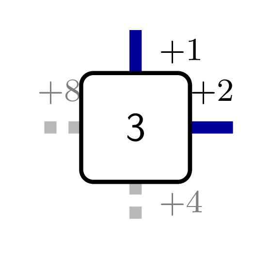
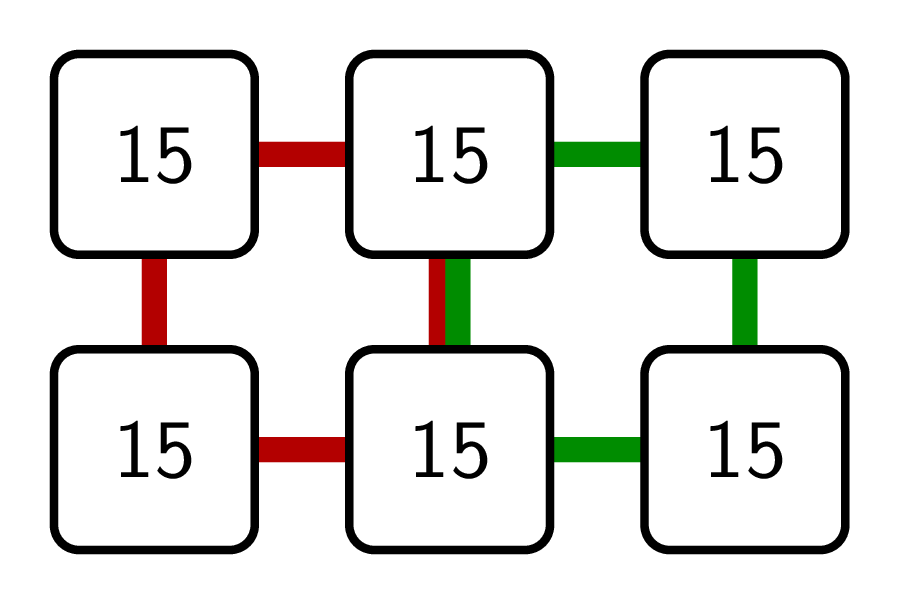
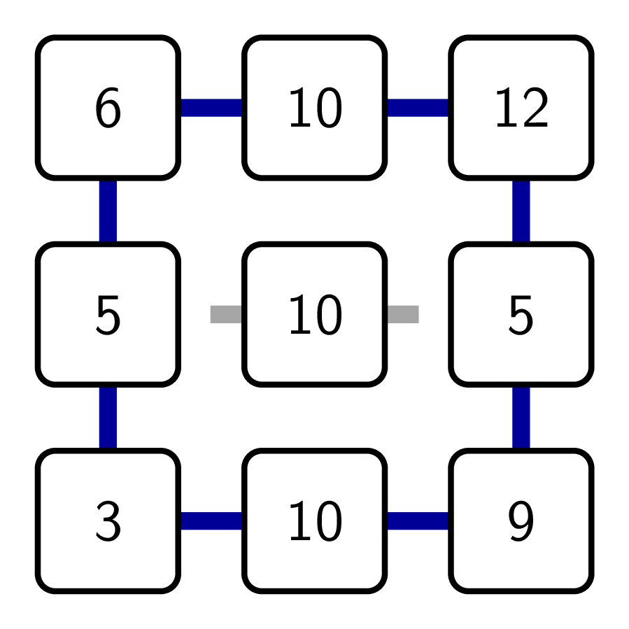

The research outpost Polaris Deep orbits a dying star, and its only protection from the heat is a coolant network laid out on a grid of $$$n \times m$$$ tiles. Each tile is either empty or holds a junction. A junction has openings in two, three, or four of the four cardinal directions — up, right, down, left. A junction with exactly one opening is physically impossible: the pressure would burst it instantly.
Two junctions in orthogonally adjacent tiles are connected if and only if both have openings facing each other. A loop is a route that starts at some junction, moves along connections, and returns to the starting junction without using any connection twice.
The chief engineer measures the network's resilience by the number of independent loops$$$^{\dagger}$$$ it contains.
Each tile is described by a single integer $$$g_{i,j}$$$: $$$0$$$ for an empty tile, and otherwise the sum of $$$1$$$ for an opening facing up, $$$2$$$ for right, $$$4$$$ for down, and $$$8$$$ for left. For instance, a junction whose openings face up and right is written as $$$g_{i,j} = 1 + 2 = 3$$$:

During a micrometeorite storm the junctions are destroyed one by one. Telemetry predicts the whole sequence of $$$q$$$ impacts in advance: every impact hits a tile containing a working junction, and no tile is hit twice.
After each impact, report the number of independent loops remaining in the network.
$$$^{\dagger}$$$ Formally, the number of independent loops of the network is the largest $$$t$$$ for which one can choose a sequence of loops $$$L_1, L_2, \ldots, L_t$$$ such that every loop $$$L_i$$$ passes through at least one connection that none of the earlier loops $$$L_1, L_2, \ldots, L_{i-1}$$$ pass through.
The first line contains a single integer $$$t$$$ ($$$1 \le t \le 2 \cdot 10^5$$$) — the number of test cases.
The first line of each test case contains two integers $$$n$$$ and $$$m$$$ ($$$1 \le n, m$$$, $$$n \cdot m \le 2 \cdot 10^5$$$) — the dimensions of the grid.
Each of the next $$$n$$$ lines contains $$$m$$$ integers $$$g_{i,j}$$$ ($$$0 \le g_{i,j} \le 15$$$) describing the tiles as explained in the statement, from the top row to the bottom row. It is guaranteed that no value has exactly one bit set. Openings facing outside the grid simply connect to nothing.
The next line contains a single integer $$$q$$$ — the number of impacts.
Each of the next $$$q$$$ lines contains two integers $$$r$$$ and $$$c$$$ ($$$1 \le r \le n$$$, $$$1 \le c \le m$$$) — the tile destroyed by the next impact. All impacted tiles are pairwise distinct, and each of them contains a junction.
It is guaranteed that $$$q$$$ does not exceed the number of junctions, and that the sum of $$$n \cdot m$$$ over all test cases does not exceed $$$2 \cdot 10^5$$$.
For each test case, print a single line containing $$$q$$$ integers: the $$$i$$$-th integer must be the number of independent loops remaining after the first $$$i$$$ impacts.
If $$$q = 0$$$, print an empty line.
42 315 15 1515 15 1531 11 22 23 36 10 125 10 53 10 922 21 21 35 6 521 21 31 100
1 0 01 00 0
14 56 10 12 6 125 10 5 5 53 10 9 3 90 0 0 0 062 21 22 51 53 12 4
2 1 0 0 0 0
The picture below shows the networks of the first two test cases of the first example; tiles are labeled with their input values.

First test case: every junction opens in all four directions; the two highlighted squares are one choice of independent loops — they share the middle connection, yet two cuts are needed to break them both.
Second test case: one single loop around the center; the center junction opens to the left and to the right, but nobody answers, so it is isolated.In the first test case every tile holds a $$$4$$$-opening junction, and two loops exist initially — for example, the left and the right unit squares. The first impact destroys tile $$$(1,1)$$$, breaking the left square, so only one loop (the right square) remains. The second impact destroys tile $$$(1,2)$$$ and breaks that loop as well, and the third impact changes nothing. Hence the answers are $$$1, 0, 0$$$.
In the second test case eight junctions form a single loop around the center. The center tile $$$10$$$ opens to the left and to the right, but none of its neighbours opens back, so it is connected to nothing. The first impact destroys this isolated junction and the loop survives — the answer is $$$1$$$. The second impact destroys tile $$$(1,2)$$$, cutting the ring into a path, so the answer becomes $$$0$$$.
In the third test case no two adjacent junctions ever face each other: tile $$$5$$$ does not open to the right and tile $$$6$$$ does not open to the left. There is not a single connection in the network, let alone a loop.
The fourth test case of the first example has $$$q = 0$$$, so the expected output for it is an empty line.
In the second example the network initially has two independent loops — one around the left $$$3 \times 3$$$ block and one around the right $$$2 \times 3$$$ block — plus one isolated junction. The first impact removes the isolated junction (answers start with $$$2$$$), the second and third impacts break the left and the right loop respectively, and the remaining impacts only shorten paths: $$$2, 1, 0, 0, 0, 0$$$.